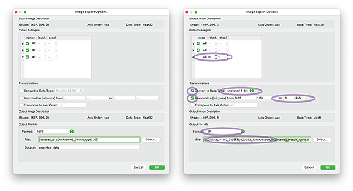

Segmentation by ilastik
ilastik is an application for segmentation by machine learning (Nature Methods, 2019). It is designed so that biologists can operate without any knowledge of machine learning. For installation, visit developer's site https://www.ilastik.org. It seems to be suitable for segmentation of specific structures (regions of interest) in full-color blockface images obtained by CoMBI. Here is a simple procedure written in Japanese, to do "Choosing normal area and damaged area in a certain organ". There is a detailed documentation in English in the official site (Documentation).
ilastikは、セグメンテーションを機械学習で行うアプリです（Nature Methods, 2019）。機械学習の知識がなくても、操作できるようにデザインされています。https://www.ilastik.orgからダウンロードしてインストールします。CoMBIで撮影したフルカラーのブロック面画像で特定の構造物（関心領域）をSegmentationするのに良さそうです。「とある臓器に正常部位と傷害部位がある。正常部位だけSegmentationしたい」、これをお題に、手順を記します。日本語の簡単な手順書です。本家のサイトには詳しい英語説明ページ（Documentation）があります。
Precedure
Create New Projectより、Pixel Classification
- プロジェクトファイル、拡張子ilpとして保存する。
- この後は、右のカラムの1番から5番に従って進めます。
「1. Input Data」
- 学習させるための画像を開く。CoMBIの連続画像のうち、標本全体や実験群全体を代表するような数枚を選ぶ。2〜4枚で行った。
Drag and Dropまたは、プルダウンメニューAdd New>Add separate image(s)
「2. Feature selection」
- 全部にチェックするので良いが、マシンパワー（おもにCPU）による。色と明るさ、輪郭線、テクスチャ（模様、行列）を計算してくれるらしい。
- 「Core i9, HBM2-2GB, メモリ32GB」では全部チェックした。「Core i5, 内蔵グラフィクス、メモリ8GB」では、チェック項目を減らした。σとびとびで半分にチェック。シグマは、認識させたい構造物が小さいか大きいかを決める設定値。
- （左カラム下方に、各種フィルタがかかった画像リストがでてくる。クリックすると画像を確認できる。）
- （最初は、どうすればいいのかさっぱり分からない作業です。とりあえず、飛ばし飛ばしで半数にチェックするくらいで進めてください。次のステップ「3. Training」において、推奨チェックを自動で探してくれるオプションがあります。）
「3. Training」
- Label1, Label2の二種類に塗り分けてみる。（デフォルトは2種類。追加して多種類できるがマシンパワーが必要）
- 選び出したい領域を、Label1の黄色いペンで印をいれる。（例：正常部位。ペンの太さは、1〜7くらいで動作が軽い。太くなると計算時間が長くなる。）
- それ以外の領域をLabel2青いペンで印を入れる。（例：傷害部位＋背景。）
- 完全に塗りつぶす必要はないが、丁寧に印を入れれば入れるほど、結果が良くなる。
Live Updateで結果を様子見しながら、作業できる。ただし、Liveオンのままでは、動作が鈍くなりがちです。- オプション：Label1などの名称は、変更できます。
- メモ：Label1, Lable２などは、事項「4. Prediction Export」では、Channel1, Channel2などと呼ばれ、表記は「c」となります。複数のChannelをTIFFやHDFにすると、FIJIで開いたとき、Channel1, 2...となります。
- オプション：ボタン
Suggest Featuresについて。前項「2. Feature Selection」を3通り評価してくれる。いったん、Live OFFにして、ボタンSuggest Featuresで別ウィンドウが開く。Filter Method (recommended), Number of Feartures0(=auto),Run Feature Selection。しばらく待つ、けっこう待つ。プルダウンから、「自身で選んだチェック、自動チェック、全チェック」の3通りを比較/選択できる。自身のチェック以外を選び直したいときは、下段のボタンSelect Feature Setを押す。上記では、Number of Featuresが、0=自動チェックの例だったが、ここで1-10のどれかを入力すると、例えば、3を入力するとsize 3通りなどを試してくれる。（Set Size Penaltyは、いじっていない、デフォルトの0.1。） セグメンテーションの正確さと計算時間との兼ね合い、落としどころを見つける。このオブションはやらなくても進められる。
「4. Prediction Export」
- Source: デフォルトは
Probabilityで、グレースケール画像になる。Simple Segmentationは、白黒ハッキリした画像（二値化、2階調、1 bitの画像）になる。 - ボタン
Choose Export Image Settingsより、- yxc: Label1だけ指定してExportするには、「c」のチェックを外して、start 0, stop 1にする。Label2指定なら、1,2とする。（ただし、このLabel指定はProbabilityでのみ有効。Simple Segmentatinでは効かない。バグ？macOS12, ilastik1_4_0b。「c」のチェックをONにすると、出力結果が不安定だった。3-labelsで検証したとき、ProbabilityではRGBになり、Simple Segmentationでは0,1,2になった。別の日には、Channelに入ったこともあった。Channelになると、PhotoshopではLayerになったり、開けなかったりする。）
- Transformation, Convert to Data Type:
unsigned 8-bit。TIFFで普通の階調数。16bitなどへ増やせるけど、Segmentationデータなので必要ないと思います。 - Transformation, Renormalize...: Probabilityでは、チェックONが必須（OFFにすると二値化するため）。Simple Segmentationでは、チェックOFFが必須（ONにすると真っ白になったり、ただ効かなかったりする。あとでPhotoshopかImageJ/FIJIで変換する。）
- Output File Info, Format:
tifまたはtiffがよいでしょう。たぶんJPEGでは境界がへんになりそうです。 - File: では、保存先を指定する。デフォルトの
{dataset_dir}/{nickname}_{result_type}.tifを入力すると、出力Exportされるファイルは、「同じフォルダに保存され、同じファイル名プラス_Simple Segmentation.tif」などになる。もし、別のフォルダを指定したい場合、ボタンSelect...より、フォルダを指定し、slashの後に、デフォルトのファイル名様式{nickname}_{result_type}.tifを入力します。アドレス指定後に、デフォルトのファイル名様式は全部消えてしまうので、改めてファイル名様式を手入力する必要があります。 - CoMBIの大量の連続画像に同一のセグメンテーション処理を施す場合は、ここの
Exportは使用しません。次の項目「5. Batch Processing」へ進んでください。 - Trainingに使用した数枚の画像だけで、セグメンテーション画像が欲しい場合： 上カラムの
Exportボタンまたは左のExport Allボタンを押すと、セグメンテーション画像を保存できます。

Export Settings, Default (left) settings and settings for Simple Segmentation, TIFF, Unsigned 8bit, and Select folder (right).
「5. Batch Processing」
Select RAW Data Filesより、連続画像を選ぶ。Shiftを押しながら、複数画像を選択する。- 左カラムのボタン、
Process all files。しばらく待つ。結構時間が掛かる。数百枚で行おうとしたとき、途中でフリーズしたし、変換されない画像があったり（抜け落ちたり）もした。マシンパワーに自信がなければ、少しずつ（100枚ずつなど）やってみるとうまくいく。- Simple Segmentationの場合、出力されたtifファイルは、一見真っ黒である。一般の画像8bitでは、ピクセルは輝度0-255を持つ。Simple Segmentationでは、二値化され（Renormalizeされなかった）画像は、0と1になっている。8bitで表記すると、00000000と00000001になっている。それぞれ、Training時のデフォルトLabelsのうち、Label1-黄色と、Label2-青色である。ImageJ/FIJIで開いて、カーソル位置の値をみると、Value1とValue2だけで構成された画像であることが確認できる。Finderで表示されるアイコンは真っ黒画像になるのでビックリするが、アイコンはそれでよい。のちに0,1を0,255に変換できる（下記）。
Export Image Settingsで設定した条件はプロジェクトファイル（.ilp）には保存されないことがある。もし、「5. Batch Processing」を、別の日、別のパソコンで実行する場合は、設定を確認すること（macOS 11, ilastik 1.4.0b, 正式対応していないバージョンのせいか？）。
ファイル・フォルダを整理する
- （別フォルダにExportしたなら、この作業は必要ありません。）
- MacならFinderで、リスト表示
as List - ファイルの種類
Kindで並べ替えると、元画像（例 .jpeｇ）と、二値化した画像（例 ..._Simple Segmentation.tif）が分かれて並ぶ。 - 二値化画像（.tif）だけ選んで、新しいフォルダに収める。
ImageJ/FIJIまたはPhotoshopで、二値化画像を0,1から0,255にする
0, 255にしておくと、3D slicerで、3D再構築しやすいため。
ImageJ/FIJIの場合
Image>Adjust>Threshold...（この作業は安定しない、数値入力ではじかれたり。下記のどれかうまくいくやつを探してください）Dark Backgroundにチェックして、数値は2, 255。選択部位が白、背景が黒- （チェックなしで、数値を、
0, 1とすると、選択部位が黒、背景白になり、反転した画像になる） - （チェックなしで、
1, 1なら、選択部位が白、背景が黒） - （
Setを押して数値を入力し、確定させたらうまくいったことがある。） - （スライダーを動かしてから、数値入力したら、うまくいったことがある。）
Applyをおして、適用する。Method:Default, Background: Dark, Check on Calculate th..., Uncheck others.- 一枚だけ変換したい場合は、ここで
Save as（うまくいけば、まっ黒にしか見えなかった画像・アイコンが、白黒画像・白黒アイコンになります。） - 連続画像を変換したい場合は、
ThresholdからApplyまでを、Macroに記録し、Batch処理する）
Photoshopの場合
Image>Adjustments>Threshold- 指定する数値は、
2 Image>Adjustments>Invert（黒バックになる。3D再構築用に）- （ActionとBatchを使って連続画像を処理する。）
3D slicerで再構築
Loadして- オプション:
Segmentation（Threshold）して Volume Renderingで、3D画像を再構築する。- （Simple Segmentationを0,1のまま3D slicerにいれてみたけど、Volume renderingでは色の調節ができませんでした。0-255への変換を経たほうがいいようです。）
Tips
2021-8-26
- Live Updateの動作が重い、500x700（20um/pix)を3-4枚。350x350に切り抜いて、Featureを3.5と5だけにしたらやっと動いた。おそらく、認識させたい構造が複雑になる（パターンが複雑、似ているけど異なる構造があるなど）。また、マークする筆を太くすると、動作が鈍くなる。単純なマシンパワー不足だけではなく、画像とSegmentation対象の性質にもよると思う。
- どうやら2回（2プロジェクト、.ilp）は行うのがいいようだ。1回目：連続画像を代表するような数枚を、適当に選んで、Segmentationする。Export, Simple Segmentationを行い、画像を確認すると、かならず失敗作が含まれる。次に、2回目：失敗作だけをつかってSegmentationを行う。その結果、すべての連続切片でおおむねSegmentationが成功している。場合によっては、3回目：同様に。3回目でうまくいったことがある。
- 学習させる画像は、3枚までが限度か。使っているのは、Core i7 4.2 GHz 4-cores、HT対応（iMac 2017）。もっとコア数があればいいのかもしれない。
2021-12-10
- スムースに動いた。200x300pixelsの画像、1100枚の中から5枚選んでSegmentationし、1100枚にBatch。初めに3枚で行ったらキレイではなく、次に5枚にしたら成功した。MacBookPro2018 Core i9 6-cores。
- Featureでは、Colorを重視し、EdgeとTextureは少なめに選択するなど、目的に合わせると同時に動作を軽くした。
- 3D slicerで表示するとき、Segmentation by iLastikは200x300を使用し、MPRやVRは400x600などの高画質を使用した。解像度が異なっても、XYZサイズを入力すれば正確に重ねられる。iLastik作業を軽くすると同時に、VR, MPRは高画質で示せた。
2022-2-25 （下記のうちTIFFの症状は再現できず。2022-2-28、下記）
- 「4. Prediction Export」で、Probabilityを出力した。Simple Segmentation（二値化した画像）とは異なり、グラデーションのあるグレースケール画像になる。画像形式では、tifかHDF5にする。
- のちにPhotoshopを使う場合は、tifで、FIJIで開く場合はHDF5。
- Convertでは、sign-8bit (0-255), sign-16bit (0-65535), unsign-16bit (-32768 - +32768), floating-32bitいろいろある。
- Photoshop用のtifなら、floating-32bitを選ぶ。もしくは、チェックしない（デフォルトでfloating32bitになる）。Photoshopで開くと、レイヤーとしてProbabilityの像が表示される。ふつうの画像にする場合は、Layer>Flatten。（floating-32bit以外を選ぶと、空っぽの画像ファイルになり、Photoshopでは、なんにもなしのレイヤーができるだけ。）
- FIJI用のHDF5なら、チェックなし（デフォルトのfloating-32bit）。
- FIJIでHDF5を開く前に、iLastik提供のプラグインが必要。 Help> ImageJ Updater Manage update sites、iLastikを選ぶ ImageJ Updaterウィンドウで、ボタンAdvanced Modeを押す。 プルダウン、View uninstalled files onlyを選ぶと、plugins/ilastik4ij.jarがみえる。 または、Searchでilastik。 ボタンinstall, ボタンApply Change FIJIを再起動
- FIJIでplug-in> ilastik> Import HDF5 より、画像を選んで開く。 反転画像もあって、2枚として開いている。 普通の画像に変換するには、まず、8bitに変換、TIFFででも保存。 ただし、Save as TIFFからは、最初の一枚しか保存できない。白バックにグレーのProbabilityのみ。表示を変えていてもだめ。それで良ければ良い。もし、白バックも黒バック（反転像）も直接保存したい場合は、Save as Image Sequenceから、TIFFへ。末尾に01, 02がついて、2枚の画像が書き出される。
2021-2-28 上記の症状は再現できないが、TIFFでできることが分かった
- Label1,2...が、Channel1,2...となることに気づいた。
- Probabilityの場合。Exportで、Label (Channel)をひとつだけ指定できた。0,1を0,255へ変換できた。Channelを複数を指定すると適当な着色がなされる、Label3種はR,G,Bになった。
- Simple Segmentationの場合。バグか。Exportで、Label(Channel)を指定できない。Renormal（0,1を0,255へ変換）できない、真っ白一辺倒の画像ができてしまう場合がある。できたのは、Label(Channel)指定しない（チェックON）、かつRenormalしない（チェックOFF）とき、Label2種から0,1へ、Label3種から0,1,2へExportできた。
- いろいろTIFFでやってみて、PhotoshopでもFIJIでも素直に開けた。（Channelに入るという症状がなかった）